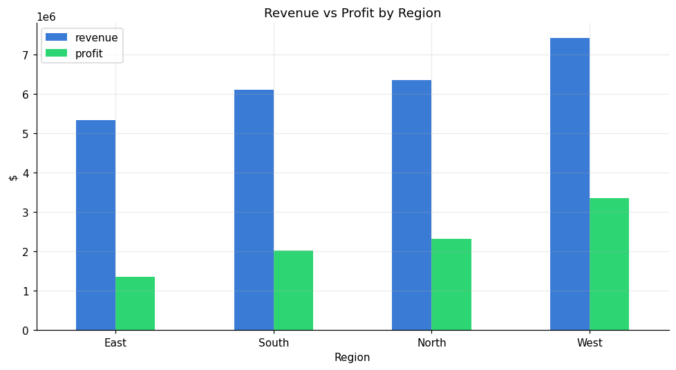

Overview
This project models a retail business as a classic star schema — one
fact_sales table joined to date, product, store, and customer dimensions — then
explores it to answer the questions a sales leader actually asks: which categories drive revenue,
how does demand move through the year, and which regions over- or under-perform.
Key Results
$25.2MTotal revenue
35.9%Profit margin
60KOrders analyzed
$420Avg order value



Approach
- Data modeling (Python): generated a reproducible star schema with seeded seasonality, regional, and category effects.
- Exploratory analysis (pandas / matplotlib): computed headline KPIs and built the trend, category, region, and weekday/weekend charts.
- SQL analytics (SQLite): answered six business questions — top categories, YoY monthly trend, regional share, weekend vs weekday AOV, top customers, and a window-function cumulative-revenue query.
- Dashboard (Power BI): a star-schema model with DAX measures (Total Revenue, Profit Margin %, YoY %, MTD) and a one-page report layout.
-- Cumulative revenue by month (SQL window function)
SELECT year, month, revenue,
SUM(revenue) OVER (ORDER BY year, month) AS cumulative_revenue
FROM monthly ORDER BY year, month;
SELECT year, month, revenue,
SUM(revenue) OVER (ORDER BY year, month) AS cumulative_revenue
FROM monthly ORDER BY year, month;
Tech Used
- Python — pandas, NumPy, matplotlib
- SQL — SQLite schema, joins, aggregations, window functions
- Power BI — star-schema model, DAX measures, report design